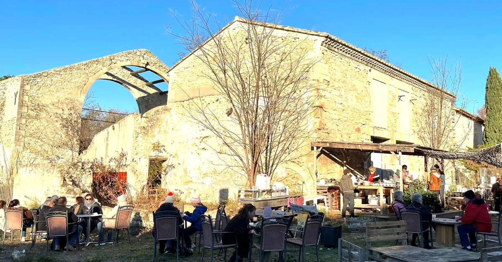

Présentation

Jardin LIBRE
Cultivons du code au cœur du vivant
Sobriété numérique, technologie citoyenne, préservation de l’eau et animation éducative autour du libre. Jardin Libre est un projet qui a germé au sein du collectif Arles-GNU/Linux et qui a démarré durant l’été 2025 en collaboration avec La Verrerie. Une station météo collecte des informations via des capteurs d’humidité, de température, de pression atmosphérique. Celle-ci est connectée à un ordinateur miniature et peu coûteux, le Raspberry Pi qui fonctionne sous le système d'exploitation Linux. Cette installation est autonome en énergie grâce au panneau solaire et sa connexion locale au WI-FI. Découvrez également le “Wiki”, une documentation participative hébergée sur le Raspberry Pi, accessible via des QR codes placés dans le jardin. Jardin libre est le résultat d’ateliers de co-construction numérique (apprentissage du code Python, html, CSS, Javascript) à destination de tous, des collégiens aux séniors.
Le Projet du Jardin LIBRE
Un potager connecté... mais déconnecté du cloud !

Se reconnecter à la nature:
Et si un jardin pouvait nous apprendre à coder, à coopérer, et à préserver l’eau?
À Arles, dans le tiers-lieu La Verrerie, nous avons décidé de faire pousser du libre… au sens propre
comme au figuré.
🌱 Et si coder permettait de se reconnecter à la nature ?
Dans ce projet ludique et engagé, les participant·es fabriquent leur propre station de jardin connectée
à partir d’un Raspberry Pi : température, humidité, lumière, arrosage… tout est mesuré pour mieux
comprendre son environnement 🌦️
Autonomie grâce à l’énergie solaire🌿 :

Une petite station pilotée par un Raspberry pi alimenté à l’énergie solaire maintenu en tension
par une petite batterie. Quand la terre demande, la technologie s’exécute quelle que soit
l’heure.
L’occasion d’apprendre à coder en Python, s’initier à l’électronique, explorer les données météo et
découvrir l’univers des logiciels libres 💡
💻🌿 Une aventure entre fablab, écologie et numérique éthique à ne pas manquer !
👤 Par l’association Arles-GNU/Linux
Un exemple de développement low-tech.
Qu’est-ce que la low-tech ?
La low-tech est une manière de faire les choses avec simplicité, sans gaspillage.
Pas besoin d’objets compliqués ou à la mode.
Ce sont, le plus souvent des outils utiles, le plus souvent faciles à faire soi-même, à comprendre,
qu’on peut réparer soi-même.
strÀ quoi ça sert ?
La low-tech permet de répondre à nos besoins tout en respectant au mieux la planète.
On peut utiliser la low-tech pour :
• Faire de l’énergie (par exemple avec le soleil)
• Mieux utiliser les ressources
• Réduire les déchets
• Se loger, se déplacer, se soigner, se laver…
• Et arroser son jardin de manière éco-ludico-responsable.
En résumé : faire ce qu’on fait tous les jours, mais de façon plus simple, plus économique et plus
écologique.
Pourquoi est-ce important ?
Parce que ça répond à nos vrais besoins, pas qu’à des envies inutiles et nous rend plus autonomes.
C’est bon pour nous… et pour la planète !
Arles GNU/Linux

Nous sommes un groupe d’utilisateurs des systèmes GNU/Linux.
L’association a pour objet la promotion des systèmes d’exploitation (OS) basés sur le noyau Linux et de
faire découvrir les différents aspects des logiciels libres.
Nous vous proposons de découvrir les fondements et la raison d’être des logiciels libres.
Linux est depuis longtemps une alternative crédible aux systèmes d’exploitation propriétaires dans le
domaine des serveurs, et tend à le devenir sur le segment des systèmes d’exploitation pour poste de
travail.
Nous sommes basés à Arles (comme notre nom l’indique). Notre siège social est à la Maison de la Vie
Associative d’Arles.
Nous avons le projet de proposer des ateliers d’initiation, de découverte ou de spécialisation dans
l’utilisation de logiciels libres.
Dans ce cadre nous développons une application d’irrigation intelligente et responsable.